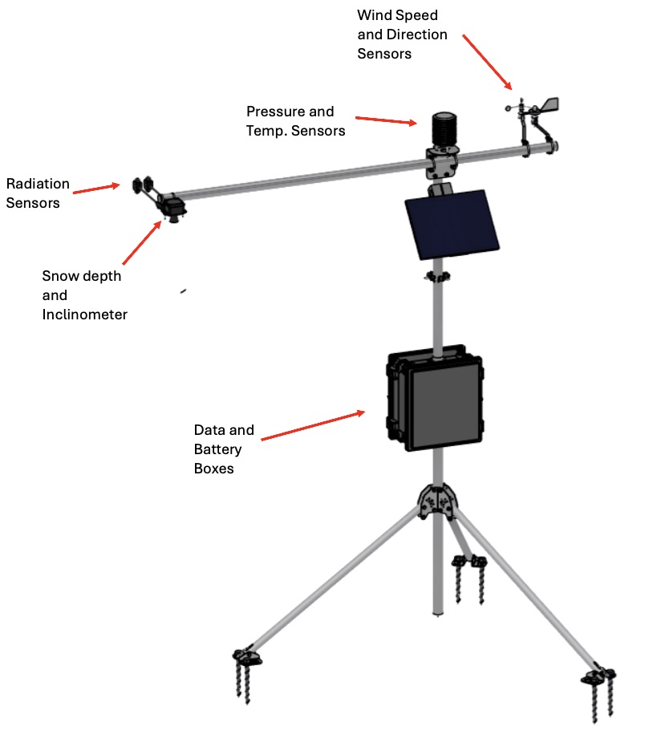
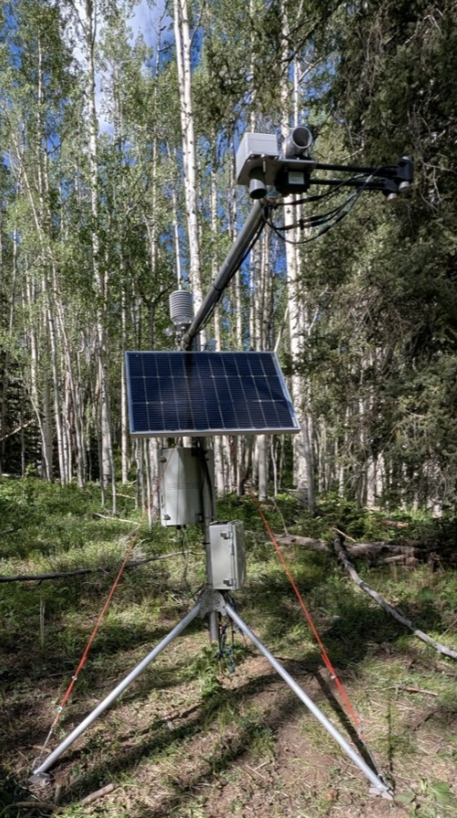
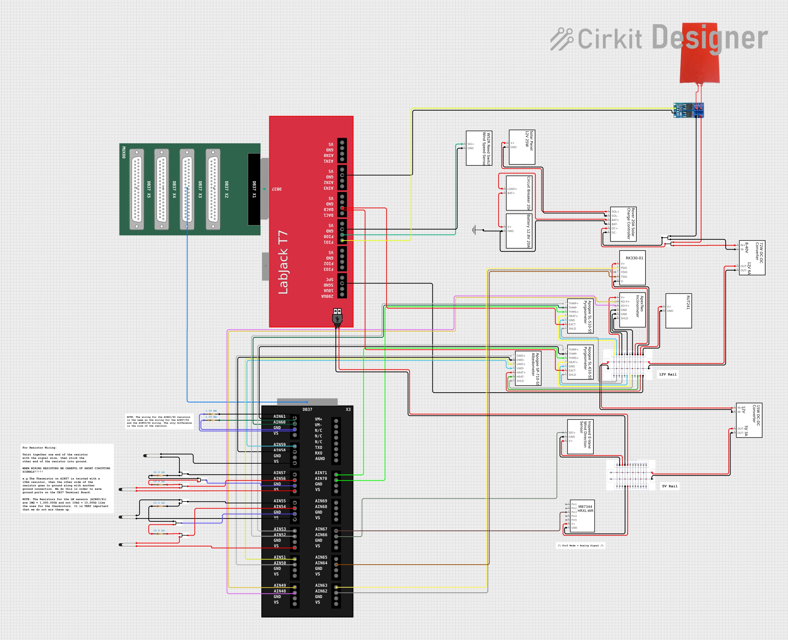
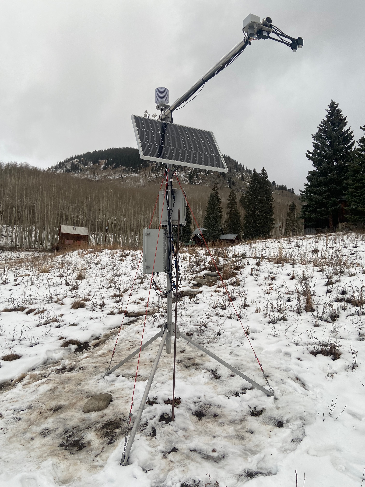

A stationary, solar-powered sensor suite built to run unattended in remote field locations housing multiple sensors while staying light and modular enough to deploy in hard to access sites.
Remote field research sites rarely have grid power or easy access, but the data collection needs demanded a station that could run multiple sensors continuously for extended stretches. The station also needed to be portable enough to move between deployment sites as the research questions shifted, without turning every relocation into its own project.


Left: sensor station CAD model. Right: remote field deployment site.
The design centered on three connected requirements: enough onboard power to run everything unattended, a housing that could protect sensor and power electronics from the elements (snow,rain,dust), and a structure light and modular enough to break down and relocate.
| POWER | Sized a solar panel and battery storage system to keep the full sensor suite running continuously through variable weather and daylight conditions at remote sites. |
| SENSORS | Integrated multiple sensor types into a single station, managing mounting, wiring, and enclosure design to reliably collect and transmit data. |
| PORTABILITY | Designed the structure to break down and relocate between field sites, avoiding a fixed, single-use installation. |


Left: wiring/circuity supporting the sensor suite. Right: station assembled and running at a field site.
Delivered a self-sufficient, solar-powered sensor station capable of unattended operation at remote sites, and portable enough to be redeployed as the research team's field needs changed.
The complete research report from this post-bacc project, covering station design, power system sizing, and field results.